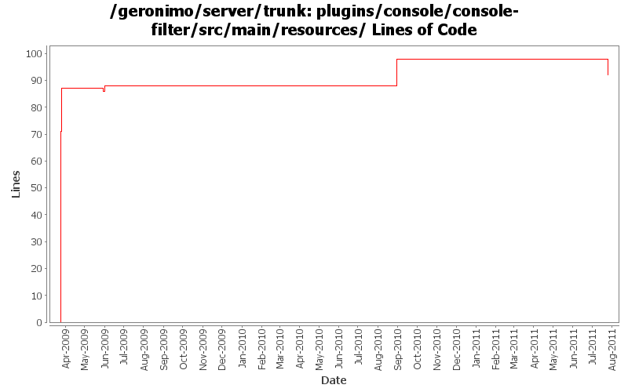

[root]/plugins/console/console-filter/src/main/resources

| Author | Changes | Lines of Code | Lines per Change |
|---|---|---|---|
| Totals | 9 (100.0%) | 181 (100.0%) | 20.1 |
| jbohn | 3 (33.3%) | 104 (57.5%) | 34.6 |
| xuhaihong | 3 (33.3%) | 56 (30.9%) | 18.6 |
| genspring | 2 (22.2%) | 12 (6.6%) | 6.0 |
| rwonly | 1 (11.1%) | 9 (5.0%) | 9.0 |
GERONIMO-6094 Some issues of confirm msg tld in admin console
9 lines of code changed in 1 file:
GERONIMO-5604 Failed to expand deploy failed information in "Deployer" porlet if fail to deploy an application with Firefox and IE 6.0
1 lines of code changed in 1 file:
GERONIMO-5563 Clicking on application URL in console opens app in the console frame with controls truncated.
11 lines of code changed in 1 file:
GERONIMO-4641 XSSXSRFFilter cause some link failure, correct a typo error in the last commit.
1 lines of code changed in 1 file:
GERONIMO-4641 XSSXSRFFilter cause some link failure
18 lines of code changed in 1 file:
GERONIMO-4641 XSSXSRFFilter cause some link failure (Patch from Rex Wang)
37 lines of code changed in 1 file:
GERONIMO-4605 Remove text based Apache License header from console pages - patch by Shawn Jiang
17 lines of code changed in 1 file:
add missing license header
16 lines of code changed in 1 file:
GERONIMO-4597 Validate Web Admin Console input - fixes for CVE-2008-5518, CVE-2009-0038, and CVE-2009-0039
71 lines of code changed in 1 file: